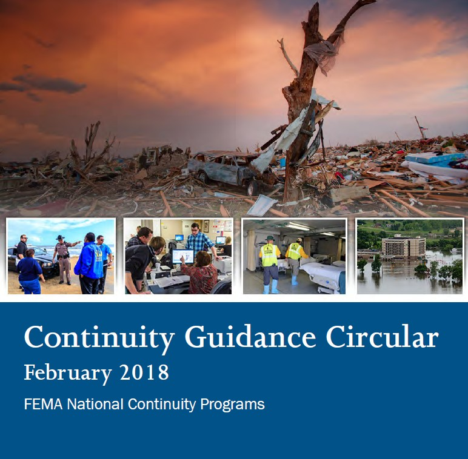

What Happens If the Government Goes Down?
On September 11, 2001, a plane hit the Pentagon. The building that houses the Department of Defense, the nerve center of the most powerful military in the world, was on fire. In New York, the World Trade Center collapsed. In Washington, Congress evacuated. The President was airborne. For a brief moment, it was not clear whether the United States government was still functioning.
It was. Because of continuity planning.
Think about that for a moment. A plane hit the Pentagon. The actual building where military command decisions are made was burning. And within hours, the government was fully operational from alternate locations, using systems that had been planned, tested, and practiced for decades. The President could issue orders. The military chain of command was intact. Congress reconvened. The courts continued. The constitutional government survived because people like me had spent years making sure it would.
That is what continuity of government is. Not a conspiracy. Not a secret weapon. Not a shadow government waiting to take over. It is the system that keeps your government alive when someone tries to kill it. I studied these frameworks in graduate school. I have taken the FEMA courses. I have read the Federal Continuity Directives cover to cover. I have professionally written COOP and COG plans. And I can tell you that what you are about to read is one of the most boring and most important things the government does.
Boring matters. Boring saves lives. Boring kept the government running on the worst day in modern American history.
How It Started: Preparing for the Unthinkable
Imagine it is 1955. You are President Eisenhower. Your intelligence agencies have just confirmed that the Soviet Union has intercontinental ballistic missiles capable of reaching Washington, D.C. in thirty minutes. Thirty minutes. That is less time than it takes to drive across the city. In half an hour, the capital of the United States could be a crater. The President, the Vice President, the Speaker of the House, the entire line of succession, the Supreme Court, the Congress, all of it, gone.
What do you do?
You build Mount Weather. A bunker carved into the Blue Ridge Mountains of Virginia, 48 miles from Washington, designed to house the entire executive branch in the event of nuclear war. You establish lines of presidential succession and practice them. You install secure communications so orders can flow even if every building in Washington is destroyed. You identify which government functions are essential enough that they must continue no matter what, and you build redundant systems to keep them running.
That is where continuity planning started. Not in a conspiracy. In a bunker built because the President of the United States looked at the Soviet nuclear arsenal and asked the only question that mattered: if they hit us, does the government survive?
Every president since has inherited that question, updated the answer, and passed it on. Eisenhower started it. Kennedy refined it during the Cuban Missile Crisis when nuclear war was not theoretical but imminent. Reagan expanded it with Executive Order 12656 in 1988. Bush created the modern framework with NSPD-51 after 9/11 proved that the Cold War plans needed updating for a new kind of threat. Obama refined it with PPD-40. Trump updated it with EO 13961. Biden continued it. Trump is modernizing it again in his second term. This is not partisan. It is the baseline requirement of having a government at all.
The Laws That Govern It
Here is something you can do right now that will change how you see every claim about government operations during emergencies. Every document governing continuity planning is publicly available. Not classified. Not secret. Not hidden. You can download every single one as a PDF and read it on your phone. The links are on this page. When someone on the internet tells you what these documents say, you can open the actual document and check. Try it. You will be amazed at how often what someone claims a document says has nothing to do with what it actually says.
📄Key Documents
The Three Things That Must Survive
At the heart of everything you are reading is one question: if the worst happens, what absolutely must keep running? The answer comes in three parts, and every continuity plan in the federal government is built around them. PPD-40 is the directive that defines all three. Think of them as the three legs of a stool. Remove any one and the whole system falls.

COOP: Can the Agency Keep Working?
If a tornado destroys your agency's building tomorrow, can you still do your job? COOP answers that question for every federal agency. Where do the people go? What systems do they use? Who takes over if the boss is unavailable? Every agency has a COOP plan. They test it regularly. When 9/11 hit, COOP is what moved the Pentagon's operations to alternate facilities within hours.
COG: Does the Government Itself Survive?
COOP keeps individual agencies running. COG keeps the government itself alive. If Washington, D.C. is destroyed, who is President? Where does Congress meet? How do the three branches communicate? COG answers these questions with pre-planned lines of succession, alternate facilities, and secure communications that exist right now, ready to activate at a moment's notice.
ECG: Does the Constitution Survive?
This is the one that matters most. COOP keeps agencies running. COG keeps the government running. ECG keeps the Constitution running. Separation of powers, rule of law, civilian control of the military, the rights of citizens. All of it. ECG exists to make sure that even in the worst catastrophe, what survives is not just a government but a constitutional government. The kind you read about in Chapter 1.
Think of this as a three-legged stool. ECG is the seat. The three legs are COG for each branch of government. COOP is the feet. Remove any leg and the whole thing falls. That is why every branch has its own continuity plan, and that is why they all exist to preserve the constitutional structure, not to replace it.
Read that ECG description one more time. "Continuous operation of constitutional processes, the protection of democratic institutions, and the preservation of the rule of law." That is the purpose of everything in this chapter. Every directive, every plan, every exercise, every agency implementation exists to make sure that the constitutional government you read about in Chapter 1 and the oath you read about in Chapter 2 survive whatever the world throws at them.
PPD-40 itself is classified. Think of it like the military: anyone can access a TM (Technical Manual), but what they do not have access to are the SOPs and processes that govern how the unit actually accomplishes the mission. The TM tells you what the equipment is. The SOPs tell you how the unit fights with it. Same principle here. The FCDs that FEMA publishes under PPD-40's authority tell agencies what to do, but the classified directive contains the operational procedures, the actual "how we do it" that you do not hand your adversaries. From those public documents, we know the FEMA Administrator is responsible for:
- Developing and publishing Federal Continuity Directives (FCDs)
- Coordinating continuity operations across the executive branch
- Establishing continuity program and planning requirements
- Conducting biennial assessments of individual departmental continuity capabilities
- Leading federal continuity training and exercise programs
- Providing continuity planning guidance for state, local, tribal, and territorial governments, non-governmental organizations, and private sector critical infrastructure owners and operators
The classification of PPD-40 is worth understanding because it is exactly the kind of thing the grifters exploit. Jon Herold did the same thing with PEADs: took classified documents, made up what they said, and charged people money for the "interpretation." The difference is that PPD-40's downstream products, the FCDs and the Continuity Guidance Circular, are publicly available. You can read what the framework actually produces without needing access to the classified directive itself.
In 2020, the President issued Executive Order 13961, "Governance and Integration of Federal Mission Resilience," along with the Federal Mission Resilience Strategy (FMRS). This EO was a significant advancement in how the government approaches continuity.
Every executive government department implemented it into their continuity programs. Department of Energy. Bureau of Reclamation. Department of Interior. All of them. Not secretly. Not through military channels. Through normal bureaucratic implementation, the way every executive order works. Each agency read the order, updated their continuity plans, and integrated the FMRS into their daily operations. This happened before the new FCD even came out in December 2023.
Here is what Trump actually accomplished with this EO, and it is genuinely impressive if you understand emergency management. He made continuity an everyday working task instead of something agencies only think about during catastrophes. The FMRS allowed telework to become part of the continuity framework. A snowstorm, a cyber incident, a pandemic could all be managed as routine operational adjustments instead of full emergency activations. Every agency started thinking about resilience as part of their daily work, not just something they dust off when a hurricane hits.
That is smart governance. That is exactly what an emergency management professional would recommend. And it has absolutely nothing to do with a secret military operation.
Understanding what EO 13961 actually accomplished is important because the terms "continuity" and "resilience" have been widely misrepresented on the internet. When you know what these words actually mean in a professional context, you can evaluate any claim about them yourself.
The diagram above shows how the Framework works. Every essential function in the federal government depends on four things to keep running. If any one of them fails during a crisis, the function stops. Continuity planning is about hardening all four so that essential functions continue no matter what happens.
Staff and Organization
The people who perform the function and the organizational structure they work within. If key personnel are unavailable, who takes over? Are they trained? Are they at a different location? Continuity planning ensures that essential functions are never dependent on a single person or a single team being available.
Equipment and Systems
The tools, technology, and infrastructure required to perform the function. Communications systems, computers, specialized equipment. If the primary systems go down, what are the backups? Continuity planning requires redundancy so that no single system failure can stop an essential function.
Information and Data
The records, databases, and information needed to perform the function. If the primary data center is destroyed, where are the backups? How quickly can they be accessed? Continuity planning ensures that critical information survives any disruption.
Sites
The physical and virtual locations where the function is performed. If the primary building is unavailable, where does the work continue? Alternate facilities, telework capabilities, and geographically dispersed operations all fall under this factor.
National Security Presidential Directive 51 (NSPD-51)
NSPD-51 establishes a comprehensive national policy on the Federal Government's structures and operations continuity. It designates a single National Continuity Coordinator responsible for coordinating continuity policy development and implementation across federal agencies. NSPD-51 assigns "National Essential Functions" to federal agencies and provides guidance for state governments and entities below the federal level, emphasizing the creation of an integrated national continuity program.
The National Continuity Plan outlines specific procedures establishing and maintaining continuity during crises. A notable aspect focuses on "Enduring Constitutional Government," referring to continuing operations:
"...with proper respect for the constitutional separation of powers among the branches, to preserve the constitutional framework under which the Nation is governed and the capability of all three branches of government to execute constitutional responsibilities and provide for orderly succession, appropriate transition of leadership, and interoperability and support of the National Essential Functions during a catastrophic emergency."
Presidential Policy Directive 8: National Preparedness
Presidential Policy Directive 8 on National Preparedness outlines key components crucial for enhancing the security and resilience of the nation. It establishes the National Preparedness Goal, which serves as a foundation for preparedness efforts across various levels of government and sectors.
PPD-8 introduces the National Preparedness System, a framework designed to coordinate and integrate the nation's preparedness activities. The directive identifies core capabilities essential for effective preparedness, emphasizing the need for a comprehensive and all-encompassing approach. It introduces planning frameworks that guide the development of strategies and plans to address potential threats and hazards.
A central theme of PPD-8 is the engagement of the "whole community" in preparedness efforts. This approach recognizes that effective preparedness requires the involvement and collaboration of individuals, communities, organizations, and all levels of government. By embracing the Whole Community approach, PPD-8 encourages a collective, inclusive effort to enhance the nation's readiness for various challenges.
National Preparedness Goal
The National Preparedness Goal (NPG) articulates what it means for the "whole community" to be adequately prepared for the disasters and emergencies they may face. The term "whole community" encompasses individuals, communities, organizations, and all levels of government collaborating to enhance preparedness.
Key elements of the National Preparedness Goal include:
Core Capabilities
Essential capabilities the whole community must possess for addressing all phases of emergency management: prevention, protection, mitigation, response, and recovery.
Coordination & Integration
Coordinated effort among federal, state, local, tribal, and territorial entities, NGOs, and private sector participants.
Risk-Informed Approach
Preparedness efforts tailored to specific community threats and hazards through risk-informed perspectives.
Whole Community
Everyone has a role in preparedness, and collective action is necessary for a resilient, prepared nation.
Federal Continuity Directive: Planning Framework (December 2023)
Before we dive into FCD 1 and 2, there is the FCD Framework document, the most crucial document as it is the foundation to the entire program of Continuity.

As it states: "This Framework is the first in a series of revised FCDs that build upon each other to provide direction and guidance for the Federal Executive Branch." Understand that the FCDs are directly relating to the executive branch and no other branch of government. This framework was developed because of the requirements found in PPD-40, National Continuity Policy; Executive Order 13961, Governance and Integration of Federal Mission Resilience; and the Federal Mission Resiliency Strategy.
With Continuity planning, the Federal Executive Branch must take an all-hazards approach to manage any disruption to its normal operations, "up to and including incidents or disruptions that occur with little to no warning." There are four planning factors that are considered in the FCD Framework:
- Staff and Organization
- Equipment and Systems
- Information and Data
- Sites
Every department and agency within the executive branch is to "identify their essential functions; determine the planning factors needed to accomplish those functions; conduct risk assessments for each planning factor; and identify and implement continuity strategies addressing the areas of greatest vulnerability."
📄Federal Continuity Directives: Framework, 1 & 2
FCD-0 (Framework): Continuity Planning Framework for the Federal Executive Branch (December 2023)
The FCD Framework is the foundational document for the entire Continuity program, published December 2023 by FEMAâs Office of National Continuity Programs. It is the first in a series of revised FCDs. FCD-1 and FCD-2 build on top of it.
ðFCD-1: Federal Executive Branch National Continuity Program
FCD-1 operates under the overarching framework of PPD-40, developed collaboratively by DHS and FEMA. It establishes the core framework requirements for continuity planning within the federal government, with a specific focus on the executive branch. FCD-1 directs agencies to develop clear and concise plans that encompass a wide range of potential scenarios, ensuring agencies are well-positioned to respond swiftly and decisively to any unforeseen circumstances.
📄FCD-2: Essential Functions Identification, Business Process Analysis, and Business Impact Analysis
FCD-2 delves deeper into the practical aspects of continuity planning. This directive provides explicit guidance on how to identify essential functions, conduct business process analysis, and perform business impact analysis. These components are essential in crafting resilient plans that not only prioritize critical functions but also evaluate the potential repercussions of disruptions.
📄In essence, FCDs 1 and 2 collectively provide a comprehensive roadmap for federal agencies, guiding them through the intricacies of continuity planning and ensuring a robust framework for the sustained and effective functioning of the Federal Executive Branch in any contingency.
Continuity Guidance Circular (2018)

The Continuity Guidance Circular (CGC) is a comprehensive guide designed to assist non-federal entities, including state and local governments, communities, and businesses, in developing their own continuity programs. Its primary objective is to emphasize the critical role of continuity planning in maintaining essential services and functions during disruptions, ultimately contributing to the overall resilience of the community.
The CGC seeks to unify the application of continuity principles, planning, and programs across the nation, providing guidance on the integration of continuity concepts and establishing a common foundation for understanding continuity. Emphasizing the shared responsibility of continuity across the whole community, the document includes individuals, local communities, private and nonprofit sectors, faith-based organizations, and all levels of government.
Continuity is a concept "to unify the application of continuity principles, planning, and programs across the Nation" (FEMA Continuity Guidance Circular, 2018). Continuity is the ability to provide uninterrupted services to support before, during, and after an incident that disrupts normal operations.
The vision for continuity is to create a more resilient nation by fostering the whole community's involvement in integrating continuity plans and programs. The ultimate goal is to ensure the sustained operation of essential functions under all conditions. To realize this vision, the way that continuity is established is designed to be flexible and adaptable, catering to all types of emergencies and to each incident.
📄Continuity is a shared responsibility across the whole community.
Readiness & Preparedness
Plans, training, exercises, and testing. Done continuously before anything happens.
Activation
Continuity plan is triggered. Personnel deploy. Alternate facilities come online. Essential functions continue without interruption.
Continuity Operations
Government runs from alternate locations, maintaining all essential functions throughout the disruption.
Reconstitution
Return to normal operations. Lessons learned documented. Plans updated. Cycle restarts.
The four phases of continuity operations: from readiness through reconstitution.
Continuity Planning
under PPD-40
Continuity Planning is an essential responsibility shared by both federal and state governments, ensuring the uninterrupted performance of essential functions even in the face of disruptions or emergencies.
"COOP and COG are designed to ensure survival of a constitutional form of government and the continuity of essential federal functions."
Source: Congressional Research Service Report RL31857, "Executive Branch Continuity of Operations: An Overview" (PDF)
At the federal level, it guarantees that critical government agencies can maintain their operations, preserving the constitutional framework underpinning the nation's governance. This planning extends to strategies for leadership succession, enabling all branches of government to fulfill their constitutional responsibilities and maintain order during challenging times. It fosters unity of effort, providing a common doctrine and purpose that guides federal agencies in their preparedness and response efforts.
Similarly, at the state government level, continuity planning is crucial for ensuring that essential functions persist and that constitutional authority is upheld during emergencies. It aligns state resources and policies to ensure the stability and effective governance of the state even in the midst of crises.
Continuity of Operations (COOP)
Continuity of Operations (COOP) is all about making sure that any organization can keep doing its most important tasks, provide necessary services, and carry out critical functions even when things go wrong, like during a major problem or disaster. It's like having a backup plan to keep things running smoothly.
This backup plan is super important because it forms the foundation for getting ready to deal with tough times. When something goes wrong, whether it's a natural disaster, a cyberattack, or any other unexpected event, COOP makes sure that the essential parts of the organization don't just stop. Instead, they keep going, making sure that people get the help and services they need.
Even the U.S. Army has its own publicly available COOP planning procedures. DA PAM 500-30 provides detailed guidance on how the Army maintains continuity of operations, including cyber resilience requirements and coordination with information technology contingency plans. This is not a secret document; it is a standard Army pamphlet available to all personnel.
📄National Essential Functions (NEFs)
The National Essential Functions (NEFs) are the eight core functions that the federal government must maintain under any circumstances. These are not optional. They are the non-negotiable responsibilities that define what the government exists to do.
| # | National Essential Function |
|---|---|
| 1 | Ensure continued functioning of our constitutional form of government, including all three branches |
| 2 | Provide visible national leadership demonstrating that the government has not been destroyed or fallen victim to aggression |
| 3 | Defend against and respond to attacks against the United States and its territory |
| 4 | Maintain and foster effective relationships with foreign nations and international organizations |
| 5 | Protect against threats to the homeland; bring to justice perpetrators of crimes or attacks |
| 6 | Provide rapid and effective response to and recovery from domestic consequences of attack or national emergency |
| 7 | Protect and stabilize the Nation's economy; ensure effective tax systems provide for the government's financial needs |
| 8 | Provide for the health and safety of the general populace; maintain the rule of law and civil order |
Every department and agency identifies its own Mission Essential Functions (MEFs) that support these NEFs. The most critical MEFs are elevated to Primary Mission Essential Functions (PMEFs). The entire system flows upward: individual agencies perform their MEFs, which support PMEFs, which sustain the eight NEFs. That is how the government ensures that no matter what happens, the essential functions of the nation continue.
Top level — must never stop
Each agency's most critical functions, designated by the President
Every department and agency identifies these internally
Functions flow upward: MEFs support PMEFs, PMEFs sustain NEFs.
How department functions (MEFs) roll up through priority functions (PMEFs) to support the eight National Essential Functions (NEFs).
The National Continuity Policy
In the event of a major catastrophe or a significant national security incident occurring in the National Capital Region, including Washington, D.C., all government agencies, including the White House, are required to have detailed Continuity of Operations (COOP) plans ready. These plans serve as a playbook for ensuring the continuity of constitutional government functions during a crisis.
As part of these plans, the President of the United States has the authority, as outlined in the Presidential Succession Act of 1947, and more specifically 3 U.S. Code § 19, to establish a temporary government, often referred to as a 'succession in government' as in the delegation of authority. This means that specific individuals, carefully chosen and designated, would be prepared to step into critical leadership roles temporarily if the regular government leadership becomes unavailable or if the continuity of constitutional government is threatened due to a major catastrophe, national emergency, or significant security incident.
This arrangement ensures the continuation of essential government functions and maintains constitutional governance during these exceptional circumstances, as prescribed by Article II, Section 1, Clause 6 of the U.S. Constitution, which states: "In Case of the Removal of the President from Office, or of his Death, Resignation, or Inability to discharge the Powers and Duties of the said Office, the Same shall devolve on the Vice President."
Additionally, each government agency identifies members of an 'Emergency Relocation Group' who are tasked with relocating to a secure and undisclosed location. These individuals are part of the agency's contingency plan, ready to carry out essential constitutional government functions when the Continuity Plan is activated. Their role is crucial in preserving the government's ability to function effectively and uphold the Constitution during times of crisis.
This Is a Professional Discipline, Not a Conspiracy Theory
Continuity planning isn't something you learn from Substack articles or Telegram posts. It's a professional discipline with formal training programs, graduate-level coursework, and national-level exercises.
FEMA's Continuity Excellence Series is a multi-level professional certification program for continuity practitioners. It's not a weekend seminar; it's a comprehensive curriculum:
Level I: Professional Continuity Practitioner
9 courses required: IS-1300.a (Intro to COOP), IS-242.b (Communication), IS-230.e (EM Fundamentals), IS-700.a (NIMS), IS-800.d (NRF), E/L/K-1301 (Continuity Planning), E/L/K-1302 (Continuity Program Management), ICS training, and Exercise Development.
Level II: Master Continuity Practitioner
Requires Level I completion plus: Exercise Evaluation, Leadership & Influence, Instructor Certification, a 150-question comprehensive exam, and a capstone presentation or assistant instructor role.
Deep Dive: Sub-Topics
Each of these topics has its own dedicated page with full details:
📜Source Documents
- NSPD-51 / HSPD-20 (PDF)
- Federal Continuity Directive 1 (PDF)
- Federal Continuity Directive 2 (PDF)
- Continuity Guidance Circular 2018 (PDF)
- Stafford Act (PDF)
- PPD-8: National Preparedness (PDF)
- Guide to Continuity of Government (PDF)
- Continuity of Government Report 1 (PDF)
- Continuity of Government Report 2 (PDF)
- Presidential Succession Act (PDF)
- National Continuity Plan (PDF)
- Emergency Planning for Continuity of Government (PDF)
- The Continuity of Congress (PDF)
- Continuity Plan Template (PDF)
- FEMA L-1301 Student Manual (PDF)